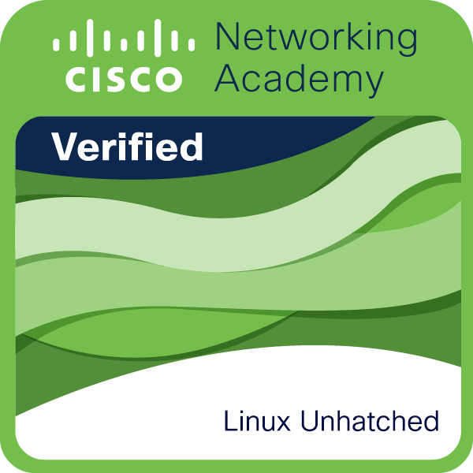

// APP DASHBOARD
01 / DEVELOPMENT · EXAMPLE
Full-Stack Web App
Replace with your capstone or strongest application.
Curiosity.
A work in progress.
HELLO, I’M CHARLES / IT STUDENT
A fourth-year Information Technology student with hands-on full-stack experience and a growing focus on Linux, infrastructure, and cybersecurity.
04.
YEAR IN IT
DEV/
FULL-STACK FOUNDATION
LINUX_
CURRENT FOCUS
SEC+
SECURITY EXPLORATION
SYSTEM PROFILE
user@portfolio:~$
Always learning.
STATUS ● ONLINE
FOCUS Linux / Security
ROOT Full-stack Dev
[ ABOUT ME ]
I'm a fourth-year IT student who enjoys understanding how things work—from building web applications to exploring the systems and networks that keep them running.
My background is in full-stack development. Lately, I've been diving deeper into Linux, system administration, and cybersecurity through hands-on practice. I'm still exploring where I fit best, and that's part of the journey.
[ SELECTED WORK ]
Things I've built, explored, and learned from.
// APP DASHBOARD
01 / DEVELOPMENT · EXAMPLE
Replace with your capstone or strongest application.
$ sudo apt update
Reading package lists... Done
$ systemctl status ssh
● active (running)
$ ufw status
Status: active
02 / LINUX · LAB IDEA
Document a VM, SSH, services, and firewall setup.
SECURITY LAB
ISOLATED ENVIRONMENT · AUTHORIZED ONLY
03 / SECURITY · LAB IDEA
Write up networking, permissions, or CTF exercises.
PORTFOLIO / 2026
Design.
Develop.
Deploy.
04 / WEB DEVELOPMENT · THIS SITE
HTML, Tailwind CSS, and vanilla JavaScript.
[ TECHNICAL FOCUS ]
HTML · CSS · JavaScript · PHP · React · Laravel · Node.js · MySQL
Ubuntu · Kali Linux · Bash · CLI · Services · Permissions
Security fundamentals · Networking · System hardening · Labs
Docker · More Linux labs · Deeper security practice
[ LEARNING & CREDENTIALS ]

LINUX / FOUNDATIONS
Cisco Networking Academy
Part of my learning journey in Linux and systems. Explore my badge and course certificate below.
Preview unavailable? Open the certificate in a new tab ↗
✳
“I don't need to know everything yet. I just need to keep learning, building, and asking better questions.”
— MY APPROACH TO TECH
[ CONTACT ]
Open to internship opportunities, collaborations, and conversations about development, Linux, and security.